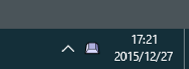

|
keyhac
|


|
|
keyhac
|
|
| 著作者: | craftware |
|---|---|
| 連絡先: | craftware@gmail.com |
| 種別: | フリーウェア |
| 動作環境: | Windows Vista/7/8/10 32bt/64bit |
| 開発環境: | Python + Visual Studio 2015 |
| Webサイト: | http://sites.google.com/site/craftware/ |
Contents
このソフトウェアは、スクリプト言語 Python を使って、キーボード操作を カスタマイズするアプリケーションです。
アプリケーションの標準のキーアサインを柔軟にカスタマイズしたい人に とって便利なソフトウェアです。
特徴
- キーボードの入力をカスタマイズします。
- 設定ファイルをスクリプト言語 Python で記述します。
- キー入力を別のキー入力に置き換えることが出来ます。
- キー入力に応じて Python で記述した任意のアクションを実行できます。
- アプリケーションごとに、別々のキーマップにカスタマイズできます。
- タスクトレイに常駐します。
- キーボードでウインドウを移動させることが出来ます。
- キーボードでウインドウをアクティブ化ことが出来ます。
- キーボードでマウスの操作を実行できます。
- アプリケーションを起動することができます。
- モディファイアキーを新たに定義することが出来ます。
- いわゆるワンショットモディアファイアを定義することが出来ます。
- クリップボード履歴機能を内蔵しています。
- キーボードマクロを記録し再生することができます。
Keyhac を起動すると、タスクトレイにキーボードのキーの形をしたアイコンが 表示されます。
タスクトレイのアイコンを左クリックすると、Keyhac のコンソールウインドウ が表示されます。このウインドウには、Keyhac 内蔵の Python インタプリタの 出力が表示されます。

タスクトレイのアイコンを右クリックすると、メニューがポップアップします。
項目の名前 機能 設定のリロード 設定ファイル(config.py)をリロードします。 設定の編集 設定ファイル(config.py)を編集します。 内部ログ ON/OFF Keyhacの詳細なログ出力を有効または無効にします。 フック ON/OFF キーフックを一時的に有効または無効にします。 キー操作 記録開始/終了 キーボードマクロの記録を開始または終了します。 端末のクリア コンソールウインドウのログを消去します。 ヘルプ 説明書を開きます。 Keyhacの終了 Keyhacを終了します。 Ctrl-Shift-Z を押すと、クリップボードの履歴をリスト表示されます。 キーアサインは、config.py でカスタマイズできます。

クリップボード履歴リストでは、以下のようにキーアサインされています。
キー 機能 ↑/↓ 選択位置を変更します。 Enter 選択位置のテキストを貼り付けます。 Ctrl+Enter 選択位置のテキストを、引用記号付で貼り付けます。 Shift+Enter 選択位置のテキストを、クリップボードに格納します。 Esc ウインドウを閉じます。 F インクリメンタルサーチを開始します。 Delete 選択位置のアイテムを削除します。 ←/→ クリップボード/定型文/日時を切り替えます。
クリップボード履歴リストのなかのインクリメンタルサーチでは、* や ? のワイルドカードを使用することが出来ます。
インクリメンタルサーチ中のキーアサイン
キー 解説 ↑/↓ 次の検索条件に合うアイテムに移動 Return インクリメンタルサーチを終了 Esc インクリメンタルサーチを終了 Migemo
Migemo はローマ字を入力して日本語をインクリメンタル検索するためのライブラリです。
Migemo の入力方法の詳細については、Migemoの本家サイト ( http://www.kaoriya.net/software/cmigemo/ ) を参照してください。
Migemoを使用する場合は、別途辞書ファイルを入手し、以下のように配置しておく必要があります。
- (Keyhacのインストール場所)/dict/migemo-dict
- (Keyhacのインストール場所)/dict/han2zen.dat
- (Keyhacのインストール場所)/dict/zen2han.dat
- (Keyhacのインストール場所)/dict/hira2kata.dat
- (Keyhacのインストール場所)/dict/roma2hira.dat
辞書ファイルは、C/Migemo のバイナリパッケージに含まれています。
http://cmigemo.googlecode.com/files/cmigemo-default-win64-20110227.zip
配布されたファイルを解凍すると以下のファイルとフォルダが作成されます。
名前 解説 keyhac.exe プログラム本体 python35.dll Pythonランタイムライブラリ library.zip スクリプトが格納されているアーカイブ _config.py デフォルト設定ファイル readme_en.txt 最初に読む文書 (英語) readme_ja.txt 最初に読む文書 (日本語) lib/ 実行に必要なライブラリが格納されているディレクトリ extension/ ユーザサイドのスクリプトを入れるディレクトリ theme/ テーマのデータが格納されているディレクトリ dict/ Migemoの辞書を入れるディレクトリ doc/en/index.html ドキュメントが格納されているディレクトリ (英語) doc/ja/index.html ドキュメントが格納されているディレクトリ (日本語) license/ コピーライト情報が格納されているディレクトリ また、最初の起動で、アプリケーションデータディレクトリに自動的に以下のファイルが作られます。 ( Vista/7/8/10 では c:/Users/(name)/AppData/Roaming/Keyhac、XP では c:/Documents and Settings/Application Data/Keyhac)
名前 解説 config.py 設定ファイル keyhac.ini 状態保存ファイル config.py と keyhac.ini は、keyhac.exe と同じディレクトリにおいておけば、 そちらが優先的に使われます。USBメモリなどで持ち歩く際に便利な方法です。
インストールしたフォルダごと消してください。
また、アプリケーションデータディレクトリを削除してください。 ( Vista/7/8/10 では c:/Users/(name)/AppData/Roaming/Keyhac、XP では c:/Documents and Settings/Application Data/Keyhac)
このソフトウェアはレジストリを使用しません。
このソフトウェアでは、以下のライブラリを使用しています。
- Python Programming Language
- http://www.python.org/
- Pillow
- https://github.com/python-imaging/Pillow
- C/Migemo
- http://www.kaoriya.net/
Keyhac はスクリプト言語 Python を内蔵しており、キーのカスタマイズの内容は 全て Python スクリプトとして記述します。
heyhac 一度起動すると、アプリケーションのデータディレクトリ ( Vista/7/8/10 では c:/Users/(name)/AppData/Roaming/Keyhac、XP では c:/Documents and Settings/Application Data/Keyhac) に config.py という名前の設定スクリプトが作られます。 このファイルをテキストエディタで編集します。
config.py を編集するテキストエディタは何でもかまいませんが、Python のソース コードを色付で表示してくれるものを推奨します。
config.pyの全体の構造
config.py には、以下のように、configure() という名前の関数を定義します。 configure()の引数には、Keymap オブジェクトが渡され、この Keymap オブジェクト を操作することにより、キーをカスタマイズすることが出来ます。
configure関数の定義
def configure(keymap):単純なキーの置き換え
configure() の中で、keymap.replaceKey() メソッドを呼び出すことで、 キーの意味を置き換えることが出来ます。
replaceKey()の例
# キーの単純な置き換え keymap.replaceKey( "LWin", 235 ) keymap.replaceKey( "RWin", "Space" )ここでは、左Windowsキーを仮想キーコード235番、右WindowsキーをSpaceキー に割り当てなおしています。
replaceKey() の引数としては、キーの名前をあらわす文字列と、仮想キーコード のどちらも与えることが出来ます。
replaceKey() によるキーの置き換えは、後述のほかの設定に影響を与えます。
モディファイアキーの追加
configure() の中で、keymap.defineModifier() メソッドを呼び出すことで、 モディファイアキーを追加することが出来ます。
モディファイアキーとは、Shift や Ctrl のように、同時に押しておくことで、 キー入力に別の意味を持たせるためのキーのことです。
defineModifier()の例
# ユーザモディファイアキーの定義 keymap.defineModifier( 235, "User0" )ここでは、先ほど replaceKey を使って左Windowsキーから置き換えた、 仮想キーコード 235 番を、ユーザモディファイア 0 番に割り当てています。
標準では、Alt, Ctrl, Shift, Win の 4 つのモディファイアが存在していますが、 これらとは別に、上記のように ユーザモディファイアを最大4つまで定義する ことが出来ます。( User0 ～ User3 )
グローバルキーマップの定義
Keyhac では、ウインドウの種類ごとに、別々のキーマップを定義することが 出来ますが、まずは全てのウインドウに効果のある、グローバルキーマップ の定義方法について説明します。
グローバルキーマップを定義するには、keymap.defineWindowKeymap() を 引数を渡さずに呼び出します。
defineWindowKeymap()の例
keymap_global = keymap.defineWindowKeymap()keymap.defineWindowKeymap() は、WindowKeymapオブジェクトを返します。 WindowKeymap オブジェクトに対して、以下のように辞書方式でキー入力 に対するアクションを割り当てます。
アクションの割り当て方
# USER0-↑↓←→ : 10pixel単位のウインドウの移動 keymap_global[ "U0-Left" ] = keymap.MoveWindowCommand( -10, 0 ) keymap_global[ "U0-Right" ] = keymap.MoveWindowCommand( +10, 0 ) keymap_global[ "U0-Up" ] = keymap.MoveWindowCommand( 0, -10 ) keymap_global[ "U0-Down" ] = keymap.MoveWindowCommand( 0, +10 )ここでは、先ほど defineModifier を使って定義した、ユーザモディファイア0番 と、カーソルキーの同時押しに、アクティブなウインドウの移動を割り当てています。
特定のウインドウのキーマップの定義
defineWindowKeymap() に引数を渡すことによって、特定のウインドウのキーマップ を定義することが出来ます。
defineWindowKeymap()の例
keymap_notepad = keymap.defineWindowKeymap( exe_name="notepad.exe", class_name="Edit" )ここでは、プログラム名が notepad.exe であり、 ウインドウクラス名が Edit であるようなウインドウのキーマップを定義しています。
ウインドウのクラス名やプログラム名を確認するには、タスクトレイアイコンのメニューで内部ログをONにして、目的のウインドウでキー操作を行います。 コンソールウインドウに以下のようなログが出力されます。
Window : exe : cfiler.exe : class : CfilerWindowClass : text : 内骨格defineWindowKeymap の引数には、* や ? のワイルドカードを使用して、 条件に幅をもたせることが出来ます。
さまざまなアクションの割り当て
呼び出し可能オブジェクトの割り当て
def command_HelloWorld(): print "Hello World!" keymap_notepad[ "C-A" ] = command_HelloWorld keymap_notepad[ "C-F" ] = keymap.InputTextCommand( "qwerty" ) keymap_notepad[ "C-G" ] = keymap.InputTextCommand( "テストTESTテスト" )このように任意の呼び出し可能オブジェクトを割り当てることが出来ます。
代わりのキー入力の割り当て
keymap_notepad[ "C-C" ] = "Return" keymap_notepad[ "C-D" ] = "C-F"キー入力を表す文字列を渡すことで、別のキーを入力したのと同じ効果を 持たせることが出来ます。
代わりのキー入力の割り当て(複数)
keymap_notepad[ "C-E" ] = "A-V", "A-S"このように、カンマ区切りで複数の文字列を渡すことで、複数の連続した キー入力イベントを擬似的に発生させることが出来ます。
テキストエディタの設定
テキストエディタの設定例
keymap.editor = "notepad.exe"keymap.editorに、好きなテキストエディタのパスを設定します。
以下のように、呼び出し可能オブジェクトを設定することも出来ます。
呼び出し可能オブジェクトを使った、テキストエディタの設定例
def editor(path): shellExecute( None, None, "notepad.exe", '"%s"'% path, "" ) keymap.editor = editorこの設定は、タスクトレイの Keyhac アイコンを右クリックして表示される メニューの [ 設定の編集 ] を選択したときに、config.py をどの アプリケーションで編集するかに影響します。
表示の設定
クリップボード履歴リストのウインドウと、コンソールウインドウの、フォントや表示色をカスタマイズすることができます。
フォントの設定例
keymap.setFont( "ＭＳ ゴシック", 12 )keymap.setFont()に、フォント名とフォントサイズを引数として渡します。
テーマの設定例
keymap.setTheme("black")keymap.setTheme()に、テーマ名を引数として渡します。テーマは theme ディレクトリ以下に配置されているディレクトリによって定義されています。
引用記号の設定
引用記号の設定例
keymap.quote_mark = "> "keymap.quote_markに、クリップボードからの引用貼り付け時の記号を設定します。
キーの文字列表記
config.py では、キーの入力条件や、生成する仮想のキーイベントを、 文字列で表現します。
文字列は、
"C-S-Return"や
"Ctrl-Shift-Return"のように、ハイフンで区切って、モディファイアとメインのキーを組み合わせて 表現します。
使用可能なモディファイアの記述方法は以下のとおりです。
モディファイア 記述方法 Altキー (左右どちらでも) Alt-, A- 左 Altキー LAlt-, LA- 右 Altキー RAlt-, RA- Controlキー (左右どちらでも) Ctrl-, C- 左 Controlキー LCtrl-, LC- 右 Controlキー RCtrl-, RC- Shiftキー (左右どちらでも) Shift-, S- 左 Shiftキー LShift-, LS- 右 Shiftキー RShift-, RS- Windowsキー (左右どちらでも) Win-, W- 左 Windowsキー LWin-, LW- 右 Windowsキー RWin-, RW- Userキー (左右どちらでも) User0-, User1-, User2-, User3-, U0-, U1-, U2-, U3- 左 Userキー LUser0-, LUser1-, LUser2-, LUser3-, LU0-, LU1-, LU2-, LU3- 右 Userキー RUser0-, RUser1-, RUser2-, RUser3-, RU0-, RU1-, RU2-, RU3- モディファイア以外に、次のような条件を記述することが出来ます。
"D-S-Return" "U-S-Return" "O-LShift"
条件 記述方法 キーの押し下げ D- キーの押し上げ U- ワンショットモディファイア O- メインのキーの記述方法は以下のとおりです。
記述方法 補足説明 A ～ Z 0 ～ 9 Minus Plus Comma Period Semicolon Colon Slash BackQuote Tilde OpenBracket BackSlash Yen CloseBracket Quote DoubleQuote Underscore Asterisk Atmark Caret NumLock Divide Multiply Subtract Add Decimal Num0 ～ Num9 F1 ～ F12 Left, Right, Up, Down Space Tab Back Enter/Return Escape/Esc CapsLock/Caps/Capital Apps アプリケーションキー Insert Delete Home End PageUp PageDown Alt LAlt RAlt Ctrl LCtrl RCtrl Shift LShift RShift LWin RWin PrintScreen ScrollLock Pause LButton/RButton/MButton マウスの左/右/中ボタン 仮想キーコード指定 ワンショットモディファイア
ワンショットモディファイアとは、Ctrl や Shift、User0 などのモディファイアキーが 押されて離されるまでの間に、ほかのキーが押されなかった場合に、任意の動作を実行 するための仕組みです。
ワンショットモディファイアの割り当ての例
keymap_global[ "O-LCtrl" ] = command_Testこのように、 O- という修飾子を使用することで、ワンショットモディファイアを設定 します。この例では、左Ctrlキーを単体で押して離したときに、command_Test という関数を呼び出します。
複数のキー入力へのアクションの割り当て
複数のキー入力へのアクションの設定例
keymap_global[ "C-X" ] = keymap.defineMultiStrokeKeymap( "C-X" ) keymap_global[ "C-X" ][ "C-F" ] = "C-O"この例では、Ctrl-X を押した後に Ctrl-F を押したときに、Ctrl-O を押したことにする 設定を行っています。
このように、defineMultiStrokeKeymap() メソッドで生成したキーマップを、 ほかのキーマップのアクションに割り当てることで、マルチストロークのキー入力 のカスタマイズを行うことができます。
defineMultiStrokeKeymap() の引数に渡している文字列は、キャレット位置に 表示されるヘルプメッセージです。
キーボードマクロ
Keyhac には、キーボードの入力を記録し、繰り返し再生する機能があります。 これをキーボードマクロ機能と呼びます。
キーボードマクロの記録は、タスクトレイアイコンのメニュー [キー操作 記録開始] / [キー操作 記録終了] からと、 キー割り当てを行ったコマンドのどちらかから行うことができます。
キーボードマクロの開始/終了/再生の設定例
keymap_global[ "U0-0" ] = keymap.command_RecordToggle keymap_global[ "U0-1" ] = keymap.command_RecordStart keymap_global[ "U0-2" ] = keymap.command_RecordStop keymap_global[ "U0-3" ] = keymap.command_RecordPlay keymap_global[ "U0-4" ] = keymap.command_RecordClearキーボードマクロは、ウインドウを判別せず、すべてのウインドウで同じキーシーケンスが 再生されます。キーの意味が、ウインドウによって異なる場合があるため、注意が必要です。
クリップボード履歴リストの設定
Keyhac に内蔵されている クリップボード履歴機能は、config.py でカスタマイズすることにより、 クリップボードの履歴だけではなく、定型文や日時などの、さまざまなテキストの貼り付け機能を 追加することができます。
クリップボード履歴リストの設定例
import datetime # 定型文 fixed_items = [ ( "name@server.net", "name@server.net" ), ( "住所", "〒東京都品川区123-456" ), ( "電話番号", "03-4567-8901" ), ( "config.pyを編集", keymap.command_EditConfig ), ( "config.pyをリロード", keymap.command_ReloadConfig ), ] # 日時をペーストする機能 def dateAndTime(fmt): def _dateAndTime(): return datetime.datetime.now().strftime(fmt) return _dateAndTime # 日時 date_and_time_items = [ ( "YYYY/MM/DD HH:MM:SS", dateAndTime("%Y/%m/%d %H:%M:%S") ), ( "YYYY/MM/DD", dateAndTime("%Y/%m/%d") ), ( "HH:MM:SS", dateAndTime("%H:%M:%S") ), ( "YYYYMMDD_HHMMSS", dateAndTime("%Y%m%d_%H%M%S") ), ( "YYYYMMDD", dateAndTime("%Y%m%d") ), ( "HHMMSS", dateAndTime("%H%M%S") ), ] keymap.cblisters += [ ( "定型文", cblister_FixedPhrase(fixed_items) ), ( "日時", cblister_FixedPhrase(date_and_time_items) ), ]keymap.cblisters に、クリップボード履歴ウインドウへのアイテムリストアップ オブジェクトを追加することで、クリップボード履歴以外の機能を追加します。 クリップボード履歴以外の機能には、←/→キーで切り替えることができます。
各アイテムは ( 見出し文字列, 貼り付け文字列 ) あるいは、( 見出し文字列, 呼び出し可能オブジェクト ) の形を取ります。タプルの２つ目に呼び出し可能オブジェクトを指定した場合は、 そのオブジェクトを呼び出して返される文字列を貼り付けます。
呼び出し可能オブジェクトが、貼り付け文字列ではなく None を返す場合は、 文字列の貼り付けは行われません。このようにして、クリップボード履歴ウインドウに、 コマンドの実行機能を追加することが可能です。
クリップボード履歴の最大数/最大合計サイズの設定
クリップボード履歴の最大数を設定するには、以下のように記述します。
クリップボード履歴の最大数の設定例
keymap.clipboard_history.maxnum = 10000デフォルトでは 1000 個の履歴が保存されます。
また、クリップボード履歴として保存する最大サイズを設定するには、以下のように記述します。
クリップボード履歴として保存する最大サイズの設定例
keymap.clipboard_history.quota = 10 * 1024 * 1024デフォルトでは 10MB の履歴が保存されます。